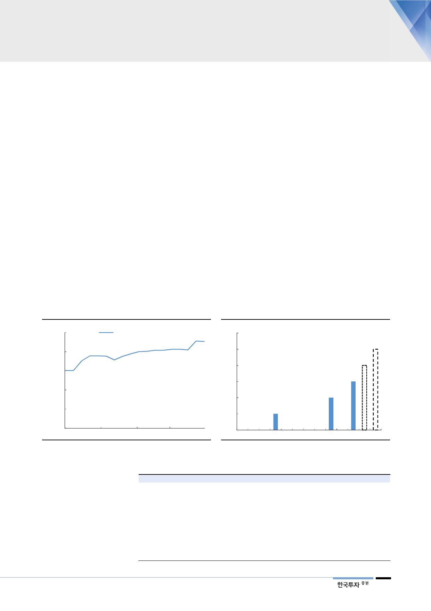

전 원전 확대점검이
정비가 길어진 이유
3. 늘어졌던 원전정비, 이제는 끝이 보인다
작년 말 예상했던 2018년 원전 계획예방정비 일수는 1,892일이었다. 하지만 현
재는 2,268일까지 늘어난 상황이다. 일부 원전에서 발생한 문제를 전 원전으로
확대 점검했기 때문이다. 구체적으로 고리 3, 4호기, 신고리 3호기, 한빛 4호기는
방사선 누출을 막는 라이너플레이트(CLP, Containment Liner Plate)의 부식 발
견(16년 6월)으로 구조물 안전 점검을 받고 있다. 이 과정에서 한빛 4호기는 콘
크리트 공극이 확인되어 591일이라는 긴 시간동안 가동을 못할 예정이다. 또한
연초 신월성 2호기에서 적발된 ‘주증기대기방출밸브’의 플러그에 대한 시험누락
(18년 1월)으로, 동일 부품을 사용한 신월성 1호기, 신고리 1, 2호기, 한빛 3~6
호기, 한울 3~6호기 등 11기도 부품 교체 및 후속조치 중이다.
올 들어 5기 재가동 성공
5월까지 9기 재가동 기대
이제 전수조사로 넘어간 원전들의 정비는 마무리 수순에 들어갔다 판단한다. 시
험누락 문제를 해결한 신월성 2호기는 3월 재가동에 성공했다. 동일 문제가 발생
한 나머지 호기들은 이미 정비일정에 이를 충분히 반영했기에, 추가적으로 정비
가 길어질 가능성은 낮다. 또한 CLP 관련 정비중인 원전 4기 중 콘크리트 구멍
이 발견돼 보수작업을 벌이고 있는 한빛 4호기(12월 재가동 예정)을 제외하고는
큰 문제는 없어 보인다. 즉 현재 정비중인 10기 중 9기는 5월까지 재가동에 성공
할 가능성이 높다.
[그림 11] 2018년 예상 정비일수
(일)
2,500
18년 예상 정비일수
2,000
1,892
1,500
1,511
1,000
500
0
17/12/4
18/1/4
자료: 한국수력원자력, 한국투자증권
18/2/4
18/3/4
2,268
[그림 12] 원전 재가동 추이 - 5월까지 9기 승인 기대
(기)
6
5
4
3
2
1
1
총 9기 재가동 기대 5
4
3
2
0
May-17
Aug-17
자료: 한국수력원자력, 한국투자증권
Nov-17
Feb-18
May-18
<표 3> 정지원전 10기 정비현황 및 재가동 시점
고리 3 호기
고리 4 호기
신고리 2 호기
신고리 3 호기
한빛 4 호기
한울 2 호기
한울 3 호기
한울 5 호기
월성 1 호기
월성 2 호기
용량
950
950
1,000
1,400
1,000
950
1,000
1,000
679
700
예방정비 시작
2017-01-19
2017-04-05
2018-02-20
2018-01-12
2017-05-18
2017-11-24
2017-12-05
2018-03-09
2017-05-28
2018-03-22
자료: 한국수력원자력, 한국투자증권
예방정비 종료
2018-05-06
2018-04-12
2018-04-29
2018-04-21
2018-12-30
2018-05-11
2018-04-28
2018-05-12
2018-05-16
2018-05-25
(단위: MW)
주요 정비 내역
CLP 교체/정비 후 도장검사
CLP 교체/정비 후 도장검사
증기방출밸브 시험누락으로 보수
CLP 교체/정비 후 도장검사
콘크리트 공극 발견
CLP 교체/정비 후 도장검사
CLP 교체/정비 후 도장검사
증기방출밸브 시험누락으로 보수
CLP 정비, 수소감시설비 설치
CLP 정비, 수소감시설비 설치
7